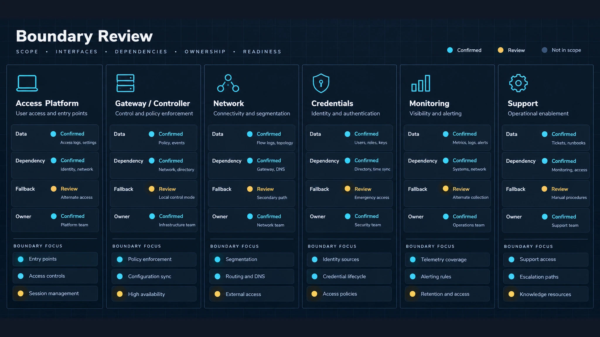
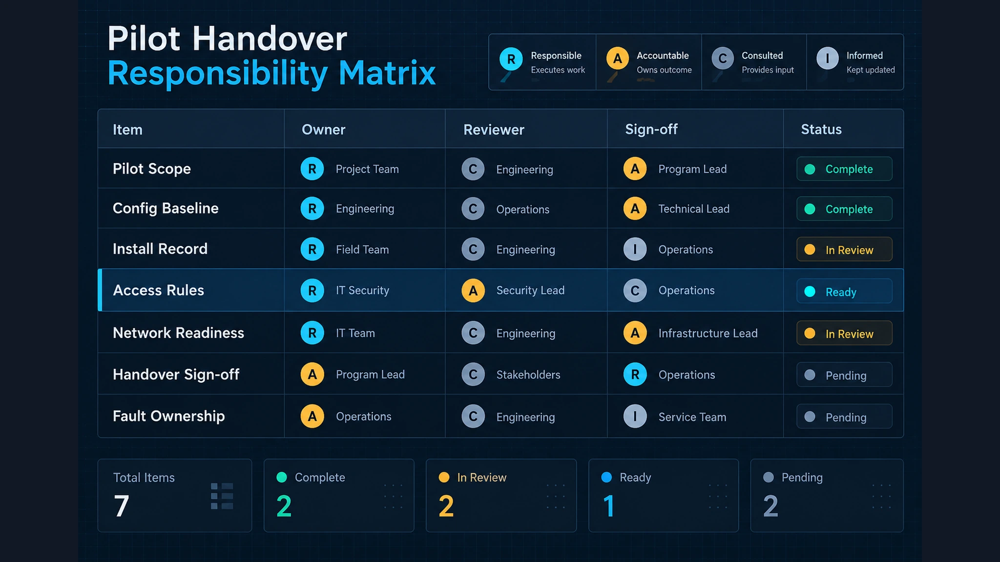

围绕门体五金方、锁具供应商、平台方、系统集成商、网络方、安装方和项目负责人，建立智能锁项目的信息接口与故障归属矩阵。
1. 决策边界

智能锁项目可能在接口处出现问题，即使每一方都认为自己的工作已经完成。本篇只定义接口核验边界：谁提供信息、谁接收信息、哪些事项需要签收确认，以及故障由谁负责调查。范围包括门体/五金方、锁具供应商、平台方、系统集成商、网络方、安装方和项目负责人。酒店或公寓只作为多方协作场景，不展开行业解决方案。
本矩阵不用于推断具体产品能力、认证、兼容性、交付表现或项目结果，这些事项需要独立证据。矩阵只记录接口和责任。
2. 项目参与方

不要只记录岗位名称，还要记录组织、联系人、决策权限、提供的信息、预期回复和升级路径。门体五金方确认门、框、预留和机械限制；锁具供应商确认锁具配置识别所需的信息；平台方定义平台的数据和运行边界；系统集成商协调系统之间的依赖；网络方定义连接和运行控制；安装方确认实际安装内容；项目负责人确认约定信息并分配未决事项。
同一组织可以承担多个角色，但记录中仍应分开。缺少一个角色不是默认由其他方补位，而是接口风险。
3. 门体五金接口

门体五金接口负责把门洞信息连接到锁具安装信息。记录门编号、门型、门框状态、开孔或预留图纸、机械限制、供电路径，以及安装开始前安装方必须收到的信息。
门体五金方应区分已确认条件和现场依赖条件。锁具供应商应说明需要哪些锁具侧信息，但不能把一般型号描述当成具体门体的批准。安装方应返回安装记录并标出偏差或缺失条件。出现问题时，先判断它属于门洞、锁具配置、安装动作还是未记录假设，再分派给对应方。
4. 访问平台接口
访问平台接口定义锁具相关设备、平台方和系统集成商之间交换的信息。记录项目标识、事件或状态数据、指令归属、账户或权限前提、约定的运行条件，以及确认信息已被接收的证据。
不能把平台名称当成所有型号、版本或配置都已支持的证明。接口记录应说明哪些内容已定义、哪些由其他方提供、哪些仍待确认。若指令或事件缺失，应先判断它是否生成、传输、接收、解析或展示，因为这些阶段可能属于不同参与方。
5. 网络与运行接口
网络与运行接口描述信息传输和运行监控所需的条件。记录连接归属、地址或访问前提、安全联系人、监控责任、维护窗口、离线运行预期，以及运行故障的报告路径。
不能因为设备使用网络，就把设备侧问题直接归给网络方；同样，也不能在没有记录网络前提的情况下假设设备或平台一定可用。每项前提都应有负责人、确认方式和升级节点。故障报告应区分断电、设备本地行为、网络传输、平台处理和用户界面展示。
6. 试点交接

试点交接是信息交接，不代表项目的所有条件都已经被证明。定义试点范围、参与方、需要交换的记录、未决事项、观察周期和签收权限。
交接记录应包含已安装标识、相关配置引用、接口联系人、已知限制、开放问题和每项问题的下一步动作。安装方、集成方、平台方、网络方、供应商和项目负责人分别确认与自身相关的内容。试点中出现故障时，记录现象、时间、位置或标识、最近一次变更、已收集证据、临时措施和调查负责人。不能仅凭现象直接确定最终责任。
7. 责任矩阵
每个接口或交接事项单独占一行。R 表示负责完成，A 表示对决策或签收负责，C 表示需协商，I 表示需知会。
| 接口事项 | 门体五金方 | 锁具供应商 | 平台方 | 系统集成商 | 网络/运行方 | 安装方 | 项目负责人 |
|---|---|---|---|---|---|---|---|
| 门洞与预留信息 | R/A | C | I | C | I | C | A |
| 锁具配置引用 | C | R | C | A | I | C | I |
| 平台数据映射 | I | C | R | A | C | I | I |
| 连接前提 | I | C | C | A | R | I | I |
| 安装偏差记录 | C | C | I | A | I | R | I |
| 试点接口观察 | C | C | C | R | C | C | A |
| 故障分流与升级 | C | C | C | R | C | C | A |
| 交接记录与开放项 | C | C | C | R | C | C | A |
责任矩阵是协作记录，不替代合同或技术证据。参与方、接口、联系人或决策权限发生变化时，应同步更新。
8. 结论
项目接口矩阵可以把隐藏的依赖关系显性化，并将每项交接连接到具体参与方、应交信息、签收确认和故障路径。它适用于酒店或公寓等多方协作项目，但不等同于酒店或公寓解决方案。
联系我们
提交项目参与方清单、接口问题、交接记录和已知故障场景，即可围绕指定项目建立责任矩阵。